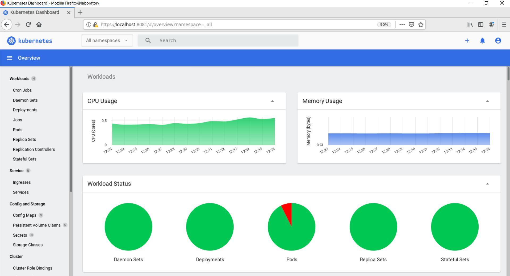

# Metrics Server
Metrics Server 用于提供核心指标 (Core Metrics), 包括 Node, Pod 的 CPU 和 内存 使用指标.
对其他自定义指标 (Custom Metrics) 的监控则由 Prometheus 等组件来完成.
# Metrics server 部署
Reference Link:
(官网)https://kubernetes.io/docs/tasks/debug-application-cluster/resource-metrics-pipeline/
(aws)https://docs.aws.amazon.com/eks/latest/userguide/metrics-server.html
下载 yaml 文件
wget https://github.com/kubernetes-sigs/metrics-server/releases/download/v0.4.1/components.yaml
添加 --kubelet-insecure-tls to the components.yaml
Reference Link: https://github.com/kubernetes-sigs/metrics-server/issues/131#issuecomment-418405881
vim components | |
129 spec: | |
130 containers: | |
131 - args: | |
132 - --cert-dir=/tmp | |
133 - --secure-port=4443 | |
134 - --kubelet-insecure-tls | |
135 - --kubelet-preferred-address-types=InternalIP,ExternalIP,Hostname | |
136 - --kubelet-use-node-status-port | |
137 image: k8s.gcr.io/metrics-server/metrics-server:v0.4.1 | |
138 imagePullPolicy: IfNotPresent |
部署
kubectl apply -f components.yaml | |
kubectl get deployment metrics-server -n kube-system |
# 查看系统资源利用情况
$ kubectl top nodes | |
NAME CPU(cores) CPU% MEMORY(bytes) MEMORY% | |
laboratory 239m 1% 8778Mi 27% | |
master-node 1492m 12% 12721Mi 40% | |
node01 940m 31% 2154Mi 27% | |
$ kubectl top pod -n kube-system | |
NAME CPU(cores) MEMORY(bytes) | |
coredns-f9fd979d6-p9dkp 9m 16Mi | |
coredns-f9fd979d6-rkk8r 6m 12Mi | |
etcd-laboratory 46m 153Mi | |
etcd-master-node 66m 151Mi | |
etcd-node01 118m 154Mi | |
kube-apiserver-laboratory 58m 343Mi | |
kube-apiserver-master-node 79m 327Mi | |
kube-apiserver-node01 110m 376Mi | |
kube-controller-manager-laboratory 25m 48Mi | |
kube-controller-manager-master-node 3m 20Mi | |
kube-controller-manager-node01 4m 27Mi | |
kube-proxy-6pp74 1m 21Mi | |
kube-proxy-7m2b4 1m 17Mi | |
kube-proxy-x7fxv 1m 19Mi | |
kube-scheduler-laboratory 5m 19Mi | |
kube-scheduler-master-node 5m 21Mi | |
kube-scheduler-node01 5m 20Mi | |
kube-vip-laboratory 6m 7Mi | |
kube-vip-master-node 8m 6Mi | |
kube-vip-node01 47m 10Mi | |
metrics-server-bc4467d77-plcxk 4m 19Mi | |
tiller-deploy-6b8b4b4bbc-4255j 1m 8Mi | |
weave-net-97jn5 7m 68Mi | |
weave-net-hwl2m 3m 95Mi | |
weave-net-pvh76 2m 52Mi |
# Kubernetes Dashboard 部署

Reference Link
(官网)https://github.com/kubernetes/dashboard
(aws)https://docs.aws.amazon.com/eks/latest/userguide/dashboard-tutorial.html
(csdn)https://blog.csdn.net/networken/article/details/85607593
kubectl apply -f https://raw.githubusercontent.com/kubernetes/dashboard/v2.0.5/aio/deploy/recommended.yaml | |
kubectl get po -n kubernetes-dashboard |
# User Guide
Accessing Dashboard: https://github.com/kubernetes/dashboard/blob/master/docs/user/accessing-dashboard/README.md#kubectl-port-forward
总共有三种方式，介绍一种简单的，其它的 Node Port， kube proxy 等方式请参考上面链接.
kubectl port-forward -n kubernetes-dashboard service/kubernetes-dashboard 8080:443 |
# 创建 user
(官网)https://github.com/kubernetes/dashboard/blob/master/docs/user/access-control/creating-sample-user.md
cat > dashboard-adminuser.yaml << EOF | |
apiVersion: v1 | |
kind: ServiceAccount | |
metadata: | |
name: admin-user | |
namespace: kubernetes-dashboard | |
--- | |
apiVersion: rbac.authorization.k8s.io/v1 | |
kind: ClusterRoleBinding | |
metadata: | |
name: admin-user | |
roleRef: | |
apiGroup: rbac.authorization.k8s.io | |
kind: ClusterRole | |
name: cluster-admin | |
subjects: | |
- kind: ServiceAccount | |
name: admin-user | |
namespace: kubernetes-dashboard | |
EOF |
部署 user
kubectl apply -f dashboard-adminuser.yaml |
查看 admin-user 账户的 token
kubectl -n kubernetes-dashboard describe secret $(kubectl -n kubernetes-dashboard get secret | grep admin-user | awk '{print $1}') |
说明： 上面创建了一个叫 admin-user 的服务账号，并放在 kubernetes-dashboard 命名空间下，并将 cluster-admin 角色绑定到 admin-user 账户，这样 admin-user 账户就有了管理员的权限。默认情况下，kubeadm 创建集群时已经创建了 cluster-admin 角色，我们直接绑定即可。
# 浏览器登陆查看
// 一个终端打开浏览器如: firefox | |
firefox | |
// 终端上输入https://localhost:8080 | |
// 输入上面的admin-user的token登陆即可查看 |
# FAQ 遇到的问题
# 问题 1: 部署完 metrics-server 后运行 kubectl get nodes 出错
$ kubectl get nodes | |
The connection to the server 10.239.140.201:6443 was refused - did you specify the right host or port? |
解决方案:
- 确定在 components.yam 里添加 **
- --kubelet-insecure-tls** - 在公司中下载东西需要添加 proxy, 部署完之后，确定在 **
/etc/kubernetes/manifests/kube-apiserver.yaml** 里注释掉 proxy 相关信息
vim /etc/kubernetes/manifests/kube-apiserver.yaml | |
41 ...... | |
42 env: | |
43 - name: NO_PROXY | |
44 value: 127.0.0.1,10.239.140.201,10.239.140.137,10.239.131.210,10.239.140.50,master-node,laboratory,node01,k8s-vip | |
45 #- name: http_proxy | |
46 # value: http://child-prc.intel.com:913 | |
47 #- name: HTTPS_PROXY | |
48 # value: http://child-prc.intel.com:913 | |
49 #- name: https_proxy | |
50 # value: http://child-prc.intel.com:913 | |
51 #- name: HTTP_PROXY | |
52 # value: http://child-prc.intel.com:913 | |
53 ...... |